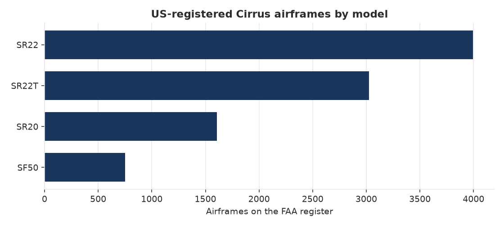
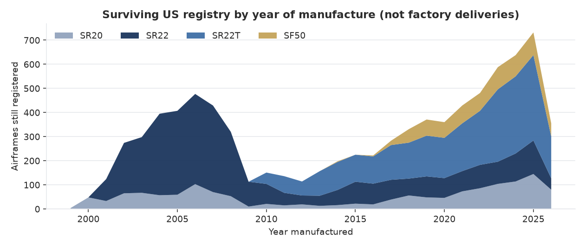
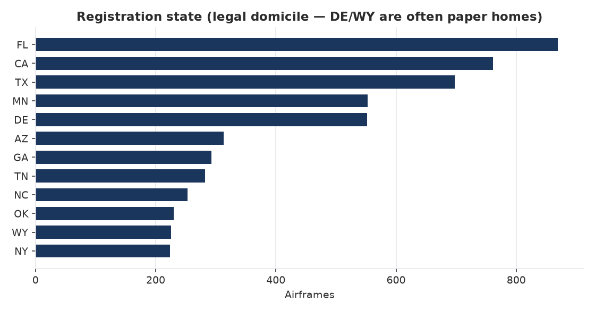
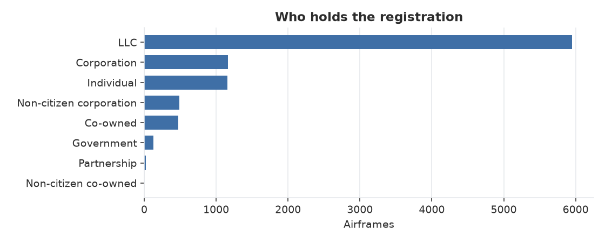

9,386US-registered Cirrus airframes
8,958Valid registrations (V)
364On manufacturer dealer cert (M)
9.0Median age (years, known vintage)
7.7%Rows missing manufacture year




Extracted 2026-08-14T23:05:46Z. SQL lives in sql/fleet_kpis.sql. Refresh with py -3 ingest.py then py -3 analyze.py.